A calm conservation tycoon about the real resident sperm whales of west Mauritius. You run boats, rules, money and research. You never control the whales — they respond to what you do.
Why it matters See screenshots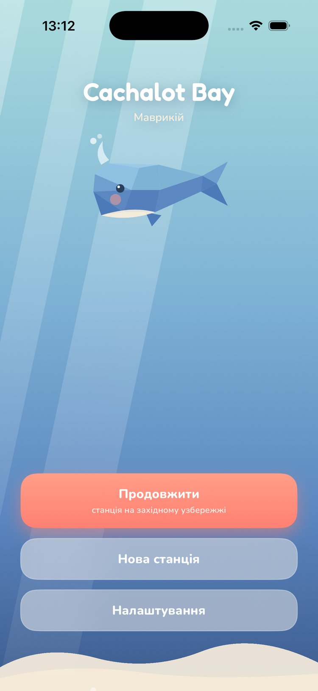
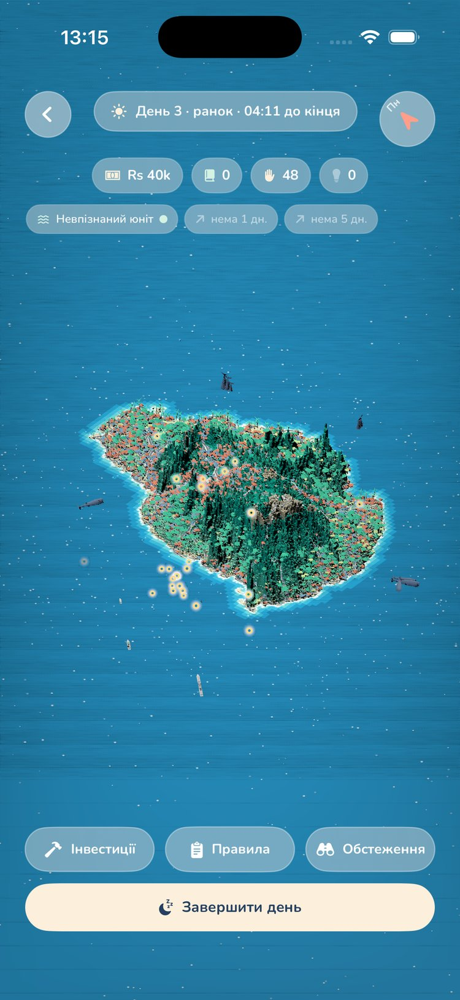
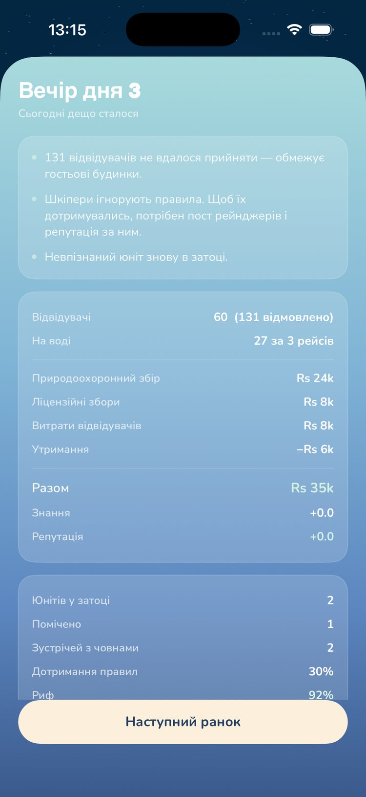
In the real ocean, humans are the variable.
The game is built around that idea.
Most nature games hand you a fact and move on. Here you find out why a 100-metre viewing distance matters — because your whales stopped coming back.
The goal: by the end, a player can explain why Mauritius banned swimming with whales in 2023, because they re-derived the rule from first principles.
No guilt, no game-over screens. Whales never die from ordinary play. The consequence is absence — and they can be brought back.
Mauritius has one of the best-documented sperm whale populations in the world. Nearly every system in the game maps onto something real.
individual sperm whales photo-identified off west and south-west Mauritius between 2008 and 2013.
of them resident, living in three social units and returning to the same waters for six years. Mostly females with calves.
cetacean species in the Mascarene Islands Important Marine Mammal Area, linking Mauritius, Réunion, La Pérouse Seamount and Rodrigues.
minimum viewing distance set in October 2023, when Mauritius banned swimming with whales after a social-media "whale-chasing" boom.
Sperm whales were listed as endangered in the US in 1970, but the commercial whaling moratorium only took effect in 1986.
shown in the game carries a citation to a real source — a scientific paper or an authority such as IUCN or NOAA.
Build, set rules, send out survey and patrol boats.
Whales move by their own logic. Tour boats follow your rules — or don't. Things go right and wrong without you.
Who was sighted, what you learned, what you earned, and what went wrong.
Unregulated tourism drives the whales away. You write the rules every operator in the bay must follow:
Calmer whales. Less money. Unhappy operators.
Money now. Empty water later.
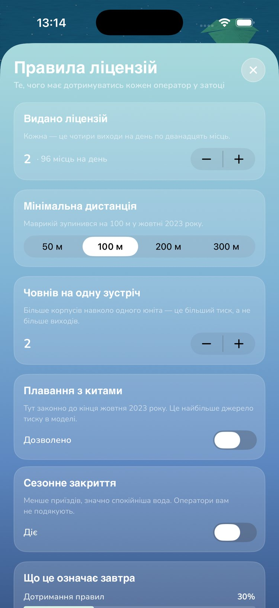
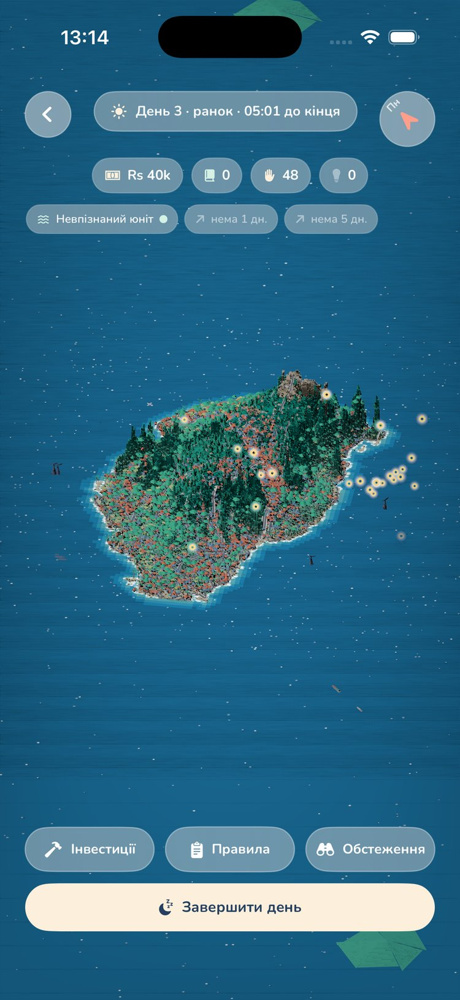
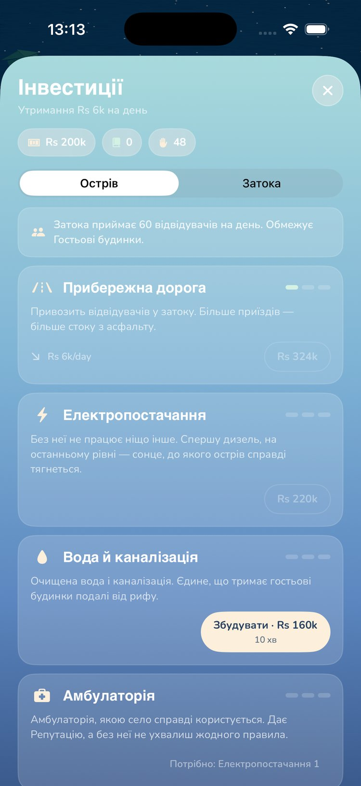
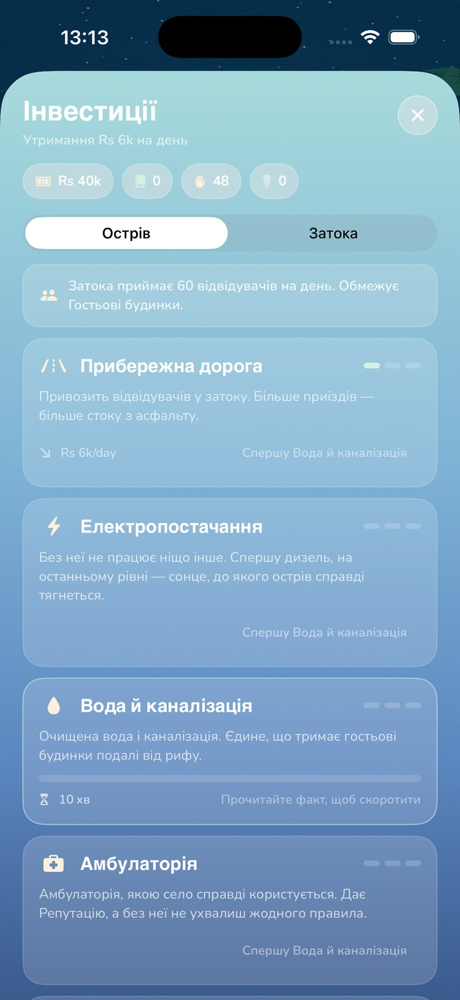
| Resource | Earned by | Spent on |
|---|---|---|
| Funding | Licence fees, grants, donations | Boats, equipment, construction |
| Knowledge | Surveys, photo-ID, acoustics | Research and understanding |
| Standing | Jobs, education, visible results | Passing rules the community backs |
Whales are individuals with families and a memory of how they were treated — never a counter that goes up.
Every whale starts as an unknown silhouette. Build a research station, photograph them, and they become individuals in a social unit you recognise when it returns — mirroring the real photo-identification work done off Mauritius.
Facts unlock when the game has just shown you why they matter, each with its source. Reading one even speeds up construction.
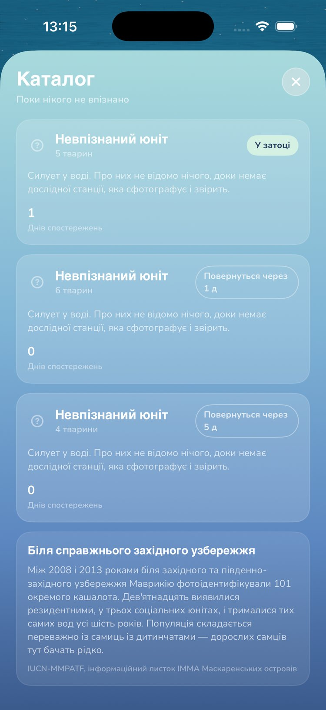
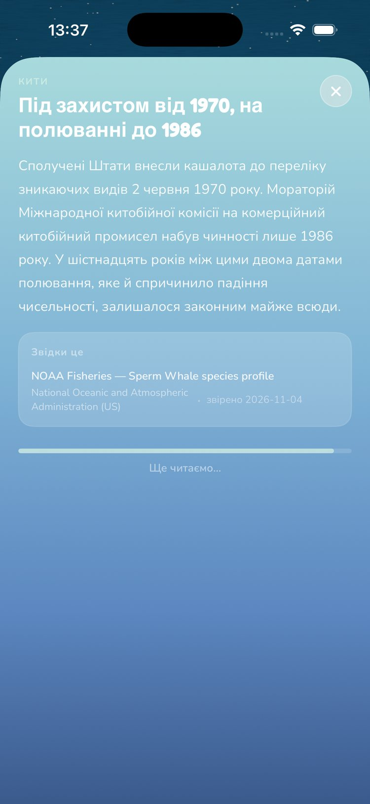
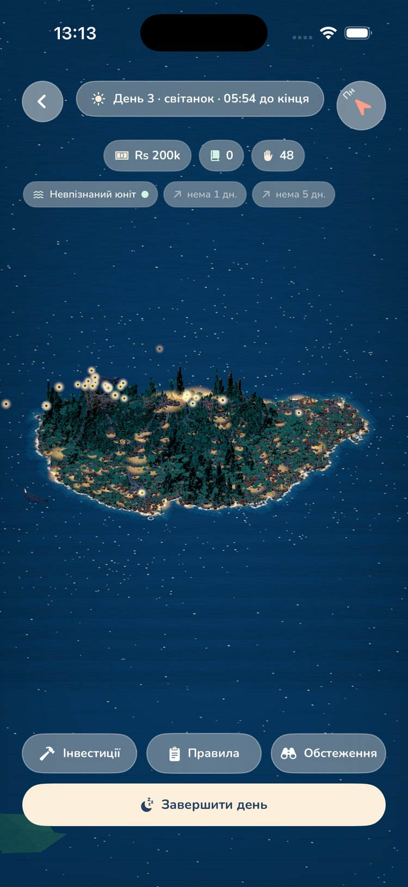
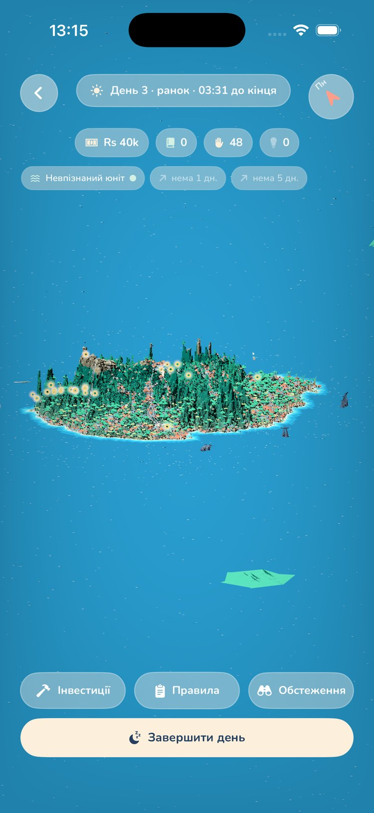
Screenshots show the Ukrainian localization.
An iPhone game for iOS 17+, with a hand-built low-poly art style.